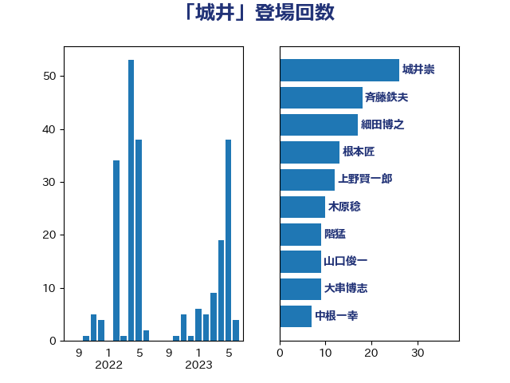

単語「城井」

| 城井崇 | 立憲民主党 | 26 回 |
| 斉藤鉄夫 | 公明党 | 18 回 |
| 細田博之 | 自由民主党 | 17 回 |
| 根本匠 | 自由民主党 | 13 回 |
| 上野賢一郎 | 自由民主党 | 12 回 |
| 木原稔 | 自由民主党 | 10 回 |
| 階猛 | 立憲民主党 | 9 回 |
| 山口俊一 | 自由民主党 | 9 回 |
| 大串博志 | 立憲民主党 | 9 回 |
| 中根一幸 | 自由民主党 | 7 回 |
| 松野博一 | 自由民主党 | 6 回 |
| 大西健介 | 立憲民主党 | 5 回 |
| 海江田万里 | 立憲民主党 | 4 回 |
| 末松信介 | 自由民主党 | 4 回 |
| 山本剛正 | 日本維新の会 | 4 回 |
| 小熊慎司 | 立憲民主党 | 4 回 |
| 道下大樹 | 立憲民主党 | 3 回 |
| 小宮山泰子 | 立憲民主党 | 3 回 |
| 伴野豊 | 立憲民主党 | 3 回 |
| 赤羽一嘉 | 公明党 | 2 回 |
| 稲富修二 | 立憲民主党 | 2 回 |
| 櫻井周 | 立憲民主党 | 2 回 |
| 森屋隆 | 立憲民主党 | 2 回 |
| 小野泰輔 | 日本維新の会 | 2 回 |
| 小寺裕雄 | 自由民主党 | 2 回 |
| 宮内秀樹 | 自由民主党 | 2 回 |
| 大野敬太郎 | 自由民主党 | 2 回 |
| 加藤勝信 | 自由民主党 | 2 回 |
| 中谷真一 | 自由民主党 | 2 回 |
| たがや亮 | れいわ新選組 | 2 回 |
| 黄川田仁志 | 自由民主党 | 1 回 |
| 鬼木誠 | 立憲民主党 | 1 回 |
| 青柳仁士 | 日本維新の会 | 1 回 |
| 鈴木俊一 | 自由民主党 | 1 回 |
| 金子恭之 | 自由民主党 | 1 回 |
| 野田聖子 | 自由民主党 | 1 回 |
| 藤岡隆雄 | 立憲民主党 | 1 回 |
| 義家弘介 | 自由民主党 | 1 回 |
| 篠原孝 | 立憲民主党 | 1 回 |
| 石川香織 | 立憲民主党 | 1 回 |
| 熊谷裕人 | 立憲民主党 | 1 回 |
| 泉健太 | 立憲民主党 | 1 回 |
| 永岡桂子 | 自由民主党 | 1 回 |
| 橋本岳 | 自由民主党 | 1 回 |
| 森英介 | 自由民主党 | 1 回 |
| 森山浩行 | 立憲民主党 | 1 回 |
| 柚木道義 | 立憲民主党 | 1 回 |
| 枝野幸男 | 立憲民主党 | 1 回 |
| 本庄知史 | 立憲民主党 | 1 回 |
| 打越さく良 | 立憲民主党 | 1 回 |
| 岩谷良平 | 日本維新の会 | 1 回 |
| 岡田直樹 | 自由民主党 | 1 回 |
| 岡本あき子 | 立憲民主党 | 1 回 |
| 下条みつ | 立憲民主党 | 1 回 |
| 三木圭恵 | 日本維新の会 | 1 回 |
| 三上えり | 立憲民主党 | 1 回 |